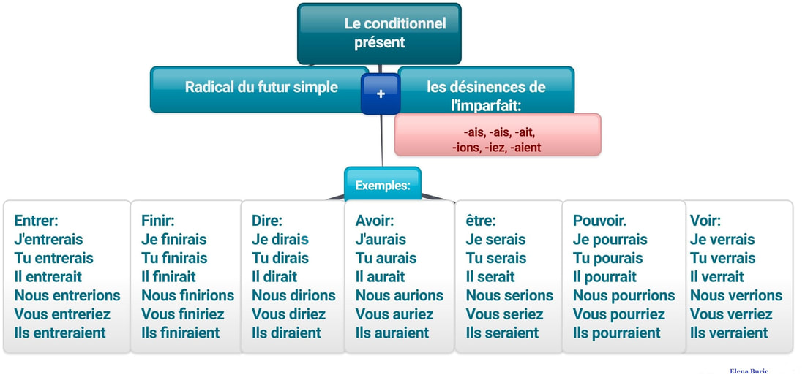
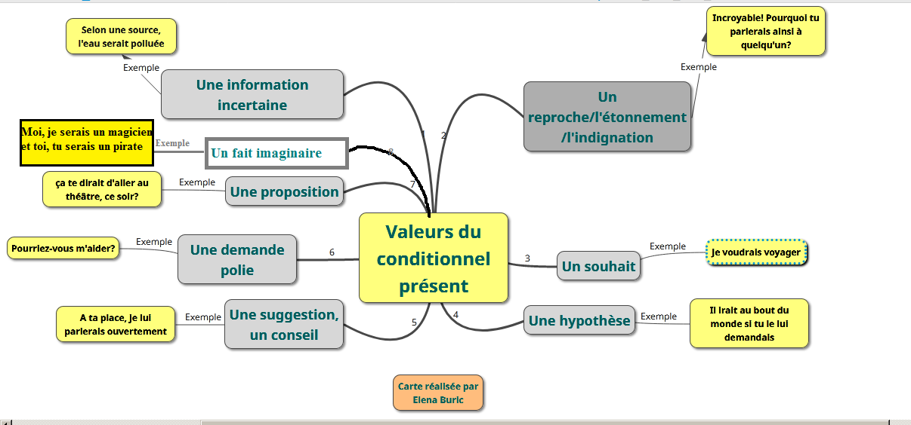

Le conditionnel présent
À retenir
Le conditionnel présent est un mode (et un temps) qui exprime des actions soumises à une condition, des souhaits, des hypothèses ou encore de la politesse.
Construction : radical du futur simple + terminaisons de l'imparfait (-ais, -ais, -ait, -ions, -iez, -aient)
👉 Même radical que le futur, mêmes terminaisons que l'imparfait !
Conjugaison complète
Les valeurs du conditionnel présent
Comprendre simplement
Le conditionnel a deux grandes familles d'emplois :
🔵 EMPLOIS MODAUX (les plus fréquents) : ils expriment l'attitude du locuteur (souhait, hypothèse, politesse, incertitude)
🟡 EMPLOI TEMPOREL (plus rare) : il exprime le futur dans le passé (dans les récits au passé)
Emplois modaux (les plus courants)
Hypothèse / Condition
Dans une phrase avec "si" + imparfait, la proposition principale est au conditionnel.
Si j'avais de l'argent, j'achèterais une maison.
Si tu venais, nous serions contents.
S'il faisait beau, on irait à la plage.
Désir / Souhait
Pour exprimer un rêve, un souhait, ce que l'on aimerait.
Je voudrais voyager autour du monde.
J'aimerais tant te revoir !
Nous souhaiterions vous inviter.
Atténuation / Politesse
Pour adoucir une demande, un conseil, une suggestion.
Pourriez-vous m'aider, s'il vous plaît ?
Je voudrais un café, s'il vous plaît.
Tu devrais te reposer.
Information incertaine / Supposition
Pour rapporter une information non confirmée, une rumeur.
Le président serait malade.
Selon la rumeur, ils se seraient séparés.
Les prix augmenteraient bientôt.
Imaginaire / Fiction
Dans les jeux, les histoires, pour créer un monde imaginaire.
Moi, je serais un magicien et toi, tu serais un pirate.
Et si on jouait aux chevaliers ?
Dans ce monde, tout serait possible.
Emploi temporel (futur dans le passé)
Futur dans le passé
Dans un récit au passé, le conditionnel présent exprime une action qui était future au moment des faits racontés.
Il a annoncé qu'il viendrait demain. ( = il a annoncé : "je viendrai demain")
Elle savait qu'elle réussirait. ( = elle savait : "je réussirai")
Ils pensaient qu'ils gagneraient le match. ( = ils pensaient : "nous gagnerons")
Résumé simple
🔵 EMPLOIS MODAUX = le conditionnel exprime un "mode" (souhait, hypothèse, politesse, incertitude)
🟡 EMPLOI TEMPOREL = le conditionnel est le "futur" quand on raconte au passé
Pièges à éviter
Conditionnel ≠ Futur simple
Futur simple : je mangerai (action certaine dans l'avenir)
Conditionnel présent : je mangerais (action hypothétique, soumise à condition)
Exemples :
✅ Demain, je mangerai au restaurant. (futur certain)
✅ Si j'avais faim, je mangerais bien. (conditionnel, hypothèse)
Astuce : le conditionnel a toujours un -s à la 1re personne du singulier.
Le doublement du R
Attention à ces verbes qui doublent le R !
courir → je courrais (2 r)
mourir → je mourrais (2 r)
envoyer → j'enverrais (2 r)
voir → je verrais (2 r)
pouvoir → je pourrais (2 r)
falloir → il faudrait (1 r)
pleuvoir → il pleuvrait (1 r)
Venir et Tenir
Ne dis pas "je venirais" ou "je tenirais" !
✅ Venir : je viendrais, tu viendrais, il viendrait, nous viendrions, vous viendriez, ils viendraient
✅ Tenir : je tiendrais, tu tiendrais, il tiendrait, nous tiendrions, vous tiendriez, ils tiendraient
Dérivés : revenir → je reviendrais, devenir → je deviendrais, maintenir → je maintiendrais
L'accent circonflexe
Ne pas oublier l'accent circonflexe à nous et vous !
✅ nous finirîmes (passé simple) ≠ nous finirions (conditionnel)
✅ vous finirîtes (passé simple) ≠ vous finiriez (conditionnel)
Au conditionnel, pas d'accent circonflexe !
nous finirions, vous finiriez
Ne pas confondre avec l'imparfait
Mêmes terminaisons mais radical différent !
Imparfait : radical du présent + terminaisons
Ex: je chantais (radical : nous chantons → chant-)
Conditionnel : radical du futur + terminaisons
Ex: je chanterais (radical : futur je chanterai → chanter-)
Attention aux verbes comme "être" :
Imparfait : j'étais / Conditionnel : je serais
Cartes mentales
Carte 1 - Formation

Carte 2 - Conjugaison

Carte 3 - Valeurs
